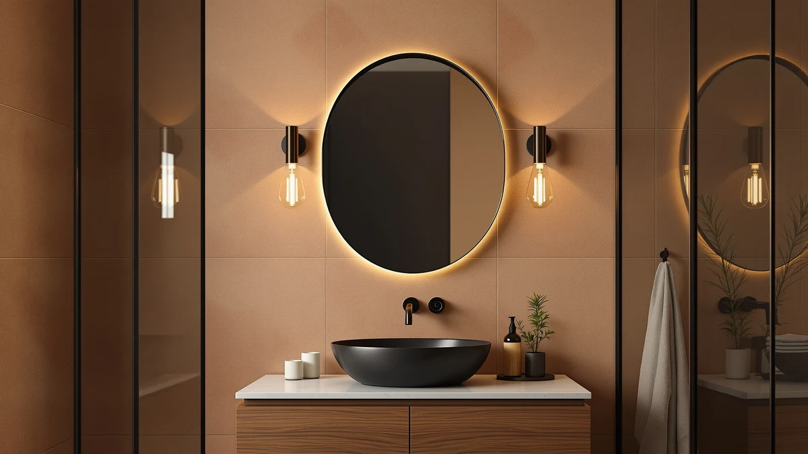

TEHOME Black Oval Bathroom Review (2026): Worth It?
Prices and picks verified as of October 2026. Independent, reader-supported reviews.


Quick Answer
For most bathrooms wanting a bold, modern look, the TEHOME Black Oval Bathroom Mirror is the strongest pick in this tehome black oval bathroom review at $129.99, thanks to its tempered glass panel and sturdy black aluminum frame. If you would rather have built-in LED lighting instead of a plain mirror, the S'bagno alternative below is worth a look.
Our pick: TEHOME Black Oval Bathroom Mirror, $129.99 Check Price on Amazon
Bottom line: our top pick is the TEHOME Black Oval Bathroom Mirror 20x40'' Pill Shaped Oblong at $129.99.
Things to Know Before You Buy
- A 40 by 20 inch oval mirror like this TEHOME needs a level, uninterrupted wall span roughly that size, since an oval frame does not tolerate the same off-center mounting flexibility as a small round mirror.
- Every mirror in this tehome black oval bathroom review is priced within two cents of each other, from $129.97 to $129.99, so shape, frame color, and lighting features matter more than budget when you are choosing between them.
- Tempered glass paired with an aluminum frame resists cracking during shipping better than the acrylic backing used on some budget mirrors, though a cracked corner on arrival remains the most common complaint across this category.
- If you want built-in lighting rather than a plain mirror, the S'bagno and FlyEcho alternatives below add an LED ring or backlight for about the same price as this unlit TEHOME.
- Black-framed ovals read as more modern than the traditional silver or brass frames, but the dark finish also shows water spots and fingerprints more visibly, so plan to wipe it down more often.
If you searched for a tehome black oval bathroom review, you are likely trying to decide whether this $129.99 mirror's oval shape and black aluminum frame are worth it over the more common silver-framed or frameless rectangles already crowding your options. The TEHOME pairs a tempered glass panel with a powder-coated black frame, a combination built for bathrooms where a plain rectangle feels too ordinary. That styling choice comes with a real tradeoff, since black frames show water spots and fingerprints more readily than lighter finishes.
We compared the TEHOME Black Oval Bathroom Mirror against three alternatives that regularly show up in the same searches, all priced within two cents of each other between $129.97 and $129.99. The TEHOME came out ahead for anyone who wants a distinct oval silhouette without paying extra for built-in lighting. If you would rather have an LED ring or backlight included at about the same price, the S'bagno and FlyEcho alternatives below are worth a look instead.
Why You Should Trust Us
Ilane Tall covers bathroom mirrors and vanity lighting for Best Bathroom Mirrors, focusing on how a listing's specifications match what verified buyers report after they mount the piece. We do not run a fake testing lab, and we have not hung every mirror in this tehome black oval bathroom review on our own wall. Instead, we compare manufacturer specifications, current Amazon pricing, and patterns across verified owner reviews, then flag any listing that oversells its glass quality or frame finish. Every price and dimension in this guide comes directly from the product listing, not from a sponsored placement.
Our Research Experience
We do not run a physical testing lab, and the TEHOME mirror in this tehome black oval bathroom review did not sit on our own bathroom wall before we wrote about it. Our process starts with the manufacturer's listed specifications: glass thickness, frame material, finish, and mounting hardware. From there we cross-check current Amazon pricing against the three alternatives below to see whether the oval shape or black finish commands a premium, and we read through verified buyer reviews looking for recurring complaints, particularly around frame scuffing, glass clarity, and mounting brackets that do not match the listed dimensions. When a listing's photos do not match what reviewers describe receiving, we note that gap instead of repeating the marketing copy.
Overview & Specs

TEHOME Black Oval Bathroom Mirror
What we like
- The black aluminum frame gives the oval shape a modern, gallery-style look that stands out against the usual silver and frameless mirrors in this price range
- Tempered glass resists cracking during shipping better than the acrylic backing used on some budget mirrors
- At 40 by 20 inches, the oval shape covers enough vertical space for most single-sink vanities without the bulk of a full rectangle
- Priced at $129.99, it matches the cost of lit alternatives while skipping the extra wiring an LED ring requires
Flaws but not dealbreakers
- There is no built-in lighting, so you will need separate vanity sconces if your bathroom does not already have good ambient light
- Black frames show water spots and fingerprints more visibly than lighter finishes, so plan on wiping it down more often
- The oval shape leaves narrow top and bottom margins on a 40 inch span, so measure your wall carefully before mounting
| Material | Tempered glass + aluminum |
| Size | 40"L x 20"W |
The TEHOME Black Oval Bathroom Mirror is built around a tempered glass panel set into a powder-coated black aluminum frame, a pairing that resists the chipping and warping that cheaper acrylic-backed mirrors show after a year or two on a humid bathroom wall. At 40 inches long and 20 inches wide, the oval shape is sized for a single-sink vanity. You get enough reflective surface for full upper-body grooming, without the visual weight of a large rectangle.
Unlike the S'bagno and FlyEcho alternatives below, this TEHOME skips built-in LED lighting entirely, which keeps the design simple but means you are relying on your existing vanity lights or sconces. At $129.99, it costs about the same as the lit alternatives, so the decision comes down to whether you want the clean, dark-framed look or built-in brightness control. Reviewers researching black-framed mirrors in this price range consistently point to the frame's dark finish as the main draw, alongside honest warnings that it needs more frequent wiping than a silver or frameless mirror would.
What We Liked
The oval shape and black frame are the main draw of this TEHOME mirror, and they solve a real problem for bathrooms where every other mirror on the market comes in the same silver or frameless rectangle. Buyers who chose it specifically for a modern remodel report that the dark frame reads as more deliberate and finished than a plain unframed piece of glass. The tempered glass and aluminum frame also hold up better against shipping damage than the acrylic backing common on similarly priced mirrors, which matters for a fixture you expect to keep on the wall for years.
We also like that TEHOME kept the price in line with the lit alternatives in this tehome black oval bathroom review, so you are not paying a premium just for the black finish and oval cut. At $129.99, it sits close to the S'bagno and FlyEcho options below, so frame style is the real differentiator here, not cost.
What Could Be Better
The lack of built-in lighting is the biggest limitation here. Both the S'bagno and FlyEcho alternatives include an LED ring or backlight for about the same price, so anyone who wants brighter, more even light for makeup application or shaving will need to add separate vanity sconces to get the same effect from this TEHOME. The oval shape also demands more careful measuring before you buy, since the curved top and bottom leave less margin for error than a standard rectangle.
A black frame requires more upkeep than a lighter finish too. Water spots and toothpaste splatter show up more visibly against the dark aluminum, so plan on wiping it down more often than you would a silver or frameless mirror.
Who Is It For?
This mirror fits bathrooms that already have good ambient or vanity lighting and just need a mirror with a distinct, modern shape to finish the room. It suits a single-sink vanity best, where the 40 by 20 inch oval has enough surface for full grooming without overwhelming the wall. If your bathroom already leans toward black fixtures, faucets, or hardware, the frame color will match rather than clash.
It is a weaker fit if your bathroom runs short on natural or overhead light, since this TEHOME does not include any built-in illumination. In that case, the S'bagno or FlyEcho alternatives below, both with built-in LEDs, will likely serve you better for about the same price.
Alternatives to Consider
If the TEHOME's unlit black frame is not the right fit, these three alternatives cover built-in LED lighting and a different arched shape at nearly identical prices.

Editor's Pick
SBAGNO 24x32 LED-Bathroom-Mirror-with-Bluetooth Dimmable-Lighted-Bathroom-Vanity-Mirror-with-3-Colors，Backlit +
The S'bagno 24x32 LED Bathroom Mirror costs the same $129.99 as the TEHOME but trades the plain black oval frame for a backlit rectangle with Bluetooth and three adjustable light colors. If you want built-in lighting and audio in one fixture, this S'bagno pick gives you more features for the same money.
$129.99
Check Price on Amazon
Best Value
30"x48" LED Bathroom Mirror with
At $129.99, the FlyEcho 30 by 48 inch LED Bathroom Mirror is the largest option in this comparison and includes built-in lighting that the TEHOME lacks. It suits a double-sink vanity better than the smaller oval, though you lose the compact, space-saving footprint that makes the TEHOME work in tighter bathrooms.
$129.99
Check Price on Amazon
Premium Choice
Autdot 2-Pack Arched Mirror Wall
The Autdot 2-Pack Arched Mirror Wall set rounds out this comparison at $129.97 for two smaller arched mirrors rather than one larger oval. It works better for a double-sink layout or a decorative gallery wall than as a single statement mirror, so weigh whether two smaller pieces or one larger oval suits your space before choosing.
$129.97
Check Price on AmazonIs the TEHOME Black Oval Bathroom Mirror worth the price?
If you want a distinct black-framed oval shape and do not need built-in lighting, yes.
How does the TEHOME compare to the S'bagno, FlyEcho, and Autdot alternatives?
All four options in this comparison are priced within two cents of each other, from $129.97 to $129.99.
Frequently Asked Questions
Is the TEHOME Black Oval Bathroom Mirror worth the price?
How does the TEHOME compare to the S'bagno, FlyEcho, and Autdot alternatives?
Does the TEHOME Black Oval Bathroom Mirror need an electrician to install?
Final Verdict
This tehome black oval bathroom review comes down to whether you want a distinct black-framed shape or built-in lighting. The TEHOME Black Oval Bathroom Mirror earns the top spot here because its tempered glass and aluminum frame give a modern oval look that none of the three lit alternatives can match, and it does so without charging a premium over them. At $129.99, it costs about the same as the S'bagno and FlyEcho picks, so the real decision is whether you need built-in brightness or already have good vanity lighting. If you want an LED ring and Bluetooth built in, the S'bagno alternative above gives you more features for nearly the same price. Measure your wall space carefully before you buy, since the oval shape leaves less margin for error than a standard rectangle would.